Advanced_Electronics
Thu, Jul 2, 2015Semiconductors
A semiconductor has conducitivity between that of a conductor and an insulator.
- So once we understand the simple passive components like resistors and capacitors, we move to the world of semiconductors.
- A semi-conductor, as the name suggests has its conductivity between that of a conductor like aluminium, copper etc and insulators like glass.
- The understanding of a semiconductor and its properties relies on quantum physics to explain the motion of electrons and holes in a crystal lattice
- A semiconductor requires an unique arrangement of atoms for it be a suitable candidate for a semiconductor. Lets look at the energy band..
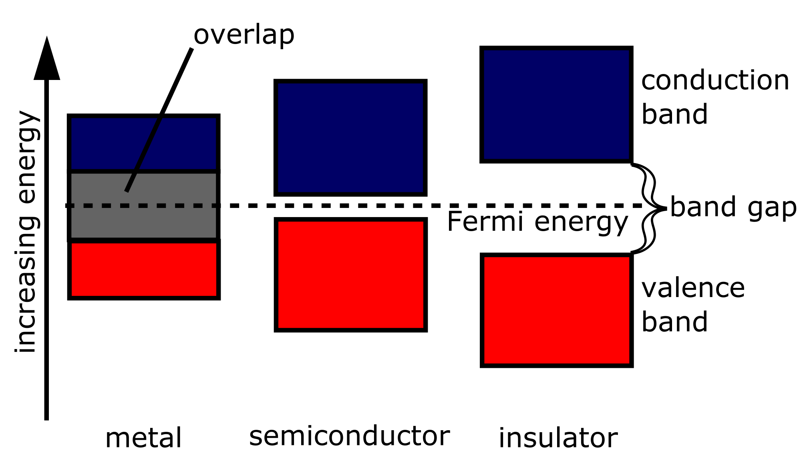
- The unique arrangement of atoms that produces such a energy band is shown by elements like Silicon, Germanium, Zinc and few others.
- Electrical conductivity of a semiconductor increases with temperature (opposite of conductor)
- The electrical properties of a semiconductor material can be modified by controlled addition of impurities, or by the application of electrical fields or light
Types of Semiconductors
N Type: Doped with element which has more number of electrons than the semiconductor element (creating extra electrons)
P Type: Doped with element which has less number of electrons than the semiconductor element (creating extra holes)
- As per the theory of semiconductors, impure semiconductors are called extrinsic semiconductors and we will be dealing mostly with impure semiconductors.
Depending on the type of impurity added we have two types of semiconductors: N - type and P-type semiconductors.
(If interested)
- Talk about covalent bond of silicon and how adding impurity (N type: Antimony, P type: Boron) helps in changing the fermi band level
Diodes
A Diode is a passive two terminal component, with a primary function to allow the flow of current in one direction only.
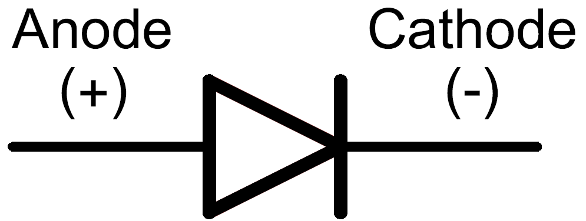
- Combining the P-type semiconductor and N-type semiconductor gives us another basic electrical device known as a Diode.
- The key function of an ideal diode is to control the direction of current-flow called the forward direction.
Working of Diodes
####Diffusion:
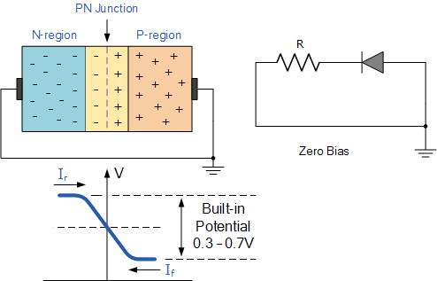
- The n type semiconductor has higher concentration of electrons compared to holes and the p type semiconductor has higher concentration of holes.
- Due to this a process called diffusion takes place. In this process free electrons from the n side will diffuse (spread) into the p side and combine with holes present there, leaving a positive immobile (not moveable) ion in the n side.
- Hence few atoms on the p side are converted into negative ions. Similarly few atoms on the n-side will get converted to positive ions.
- Due to the presence of these positive and negative ions a static electric field called as “barrier potential” is created across the p-n junction of the diode which is called as “barrier potential”.
####Forward-Bias:
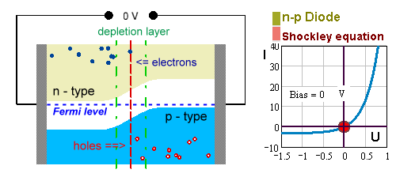
- Due to the negative terminal on the n-side, electrons from the n-side are pushed towards the p-region and vice versa on the p-side.
- This keeps happening and at a certain point the depletion region collapses and there is no opposition to the flow of current.
So what happens in Reverse Bias?
- When the diode is reverse biased the hole from the p-side will get attracted towards the negative terminal of the supply and electrons from the n-side are attracted towards the positive terminal.
- Hence the process of widening of the depletion region takes place and hence more and more opposition to the flow of current takes place.
Types of Diodes
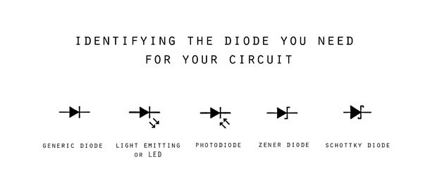
Generic Diode
Standard signal diodes are among the most basic, average, no-frills members of the diode family
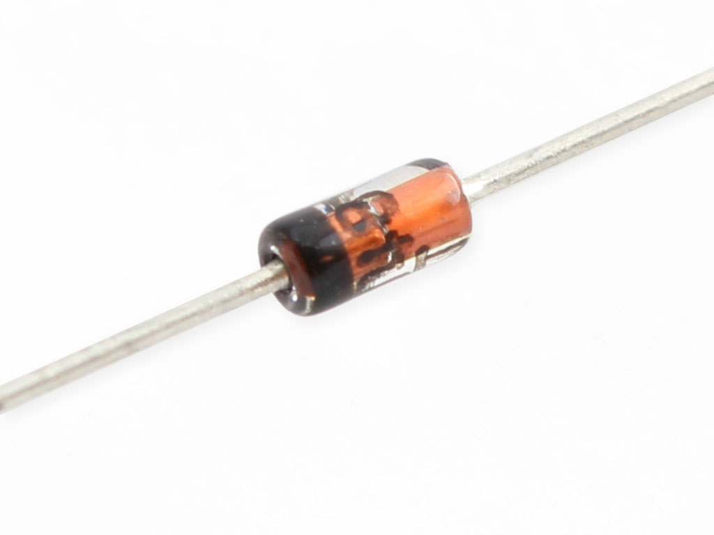
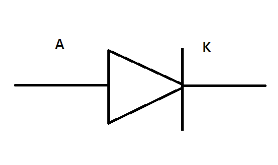
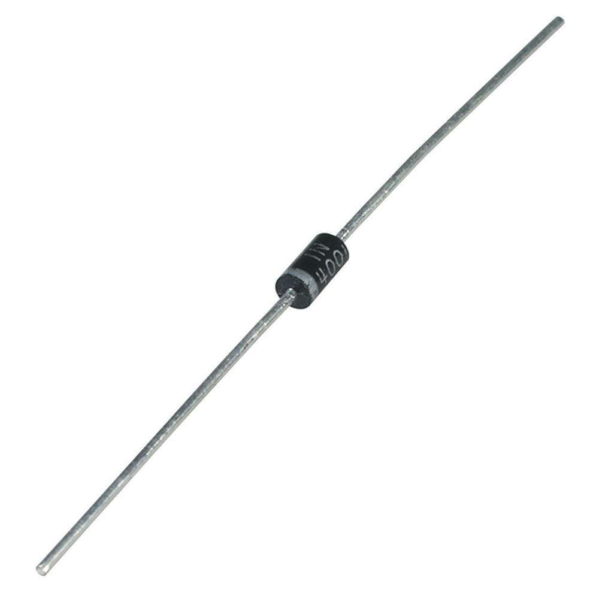
- They usually have a medium-high forward voltage drop and a low maximum current rating of ~300mA
- A common example of a signal diode is the 1N4148
- A rectifier or power diode is a standard diode with a much higher maximum current rating of about 1A but this comes at an expense of higher forward voltage drop (1.1V)
LED (Light Emitting Diode)
Light emitting diodes.. They glow!
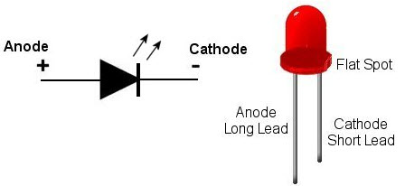
- These are the flashiest member of the Diode family.
- They’re blinky and fun! But more than that, their high-efficiency has lead to widespread use in street lights, displays, backlighting, and much more.
- Like normal diodes, LEDs only allow current through one direction. They also have a forward voltage rating, which is the voltage required for them to light up.
- But how do they emit light?.. The holes exists at lower energy level compared to the electrons. When the electrons fall from conduction. So when a free electron falls, it loses energy. This energy is released in the form of photons. Bigger the fall, higher the frequency of light.
Photodiode
The Anti-LED! Photodiodes are specially constructed diodes, which capture energy from photons of light
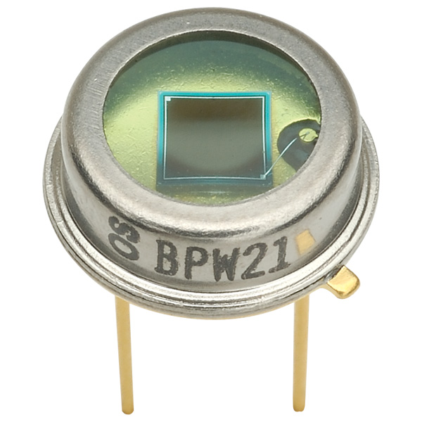
- These are the Anti-Led.. Can anyone think how it works?
- when a light photon enters the intrinsic region it can strike an atom in the crystal lattice and dislodge an electron. In this way a hole-electron pair is generated.
####Difference between Photodiode and LDR? * More sensitive * Produces large light to current ratio. It amplifies the current. * LDR works opposite.. It is passive.
Just give info about Schottky and Zener diodes
Schottky
- The semiconductor composition of a Schottky diode is slightly different from a normal diode, and this results in a much smaller forward voltage drop.
- They’ll still have a very large breakdown voltage though.
Zener
- They’re usually used to intentionally conduct reverse current.
- Zener’s are designed to have a very precise breakdown voltage, called the zener breakdown or zener voltage.
- They can be used as a voltage regulator for small loads.
Rectifier
A rectifier is a circuit that converts alternating current (AC) to direct current (DC). 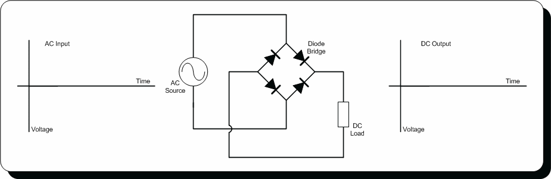
Current in AC circuits literally alternates – quickly switches between running in the positive and negative directions – but current in a DC signal only runs in one direction.
A half-wave rectifier can be made out of just a single diode. (Explain to them if interested).
Explain about working of full wave rectifier (if they’re interested).
Multimeter
####is an electronic measuring instrument that combines several measurement functions in one unit.
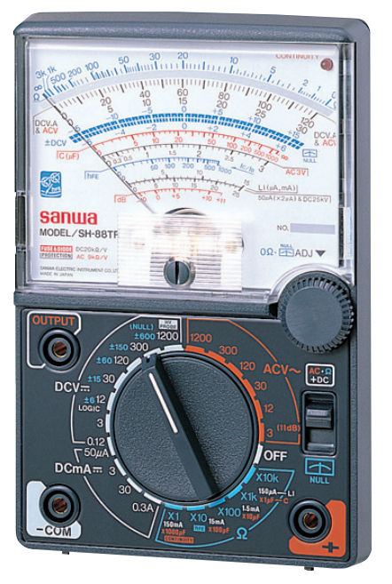
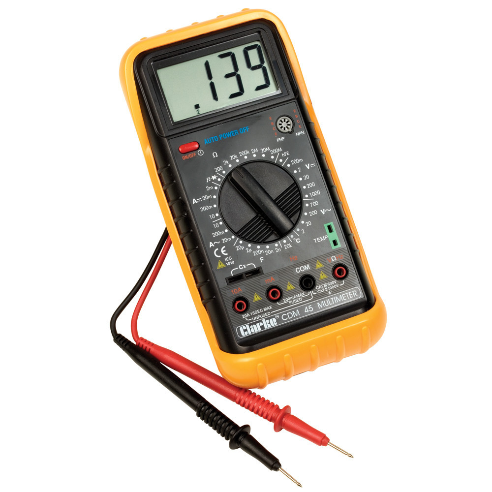
Multimeter
Things you should know:
Connecting Multimeter !!
Measuring Voltage
Measuring Current !!!
Measuring Resistance
Measuring Capacitance !!!
- Insert the Black probe in the “COM” jack. This is the COMmon, or ground, connection. The Red probe should be in the “V” jack.
- Test the continuity
- Talk about controls on multimeter
- Talk about breadboard
- Getting a negative Voltage!
- Homework: Measure current flowing through the parallel circuit and a series circuit.
- Measuring Current: Never measure voltage when the dial is at current. Current is always measured in series, which means that the multimeter is actually used to complete the circuit. If you do, its small fuse ~20mA will blow.
- Measuring Capacitance: Take utmost care when measuring AC capacitance or any high voltage capacitance.
DC Power Supplies
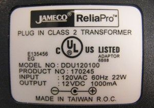
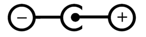
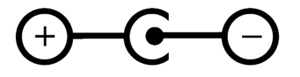
- It is always good practice to test a power supply before using it for the first time.
- Demo
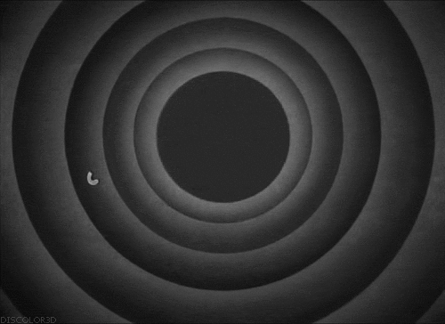